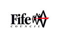
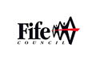

Home School
Photos School Log Book
Pittencrieff Public School: Aerial Photographs
Pittencrieff School, 20th September 1932
© Copyright RCAHMS
Dunfermline, general view, showing Dunfermline Abbey and New Row. Oblique aerial
photograph taken facing north-west. - Britain from Above
Pittencrieff School 21st September 1948
© Copyright RCAHMS
Dunfermline, general view, showing Winterthur Silks Ltd. Canmore Works, Bruce
Street and Buffies Brae. Oblique aerial photograph taken facing west. This image has
been produced from a crop marked negative. - Britain from Above
 
